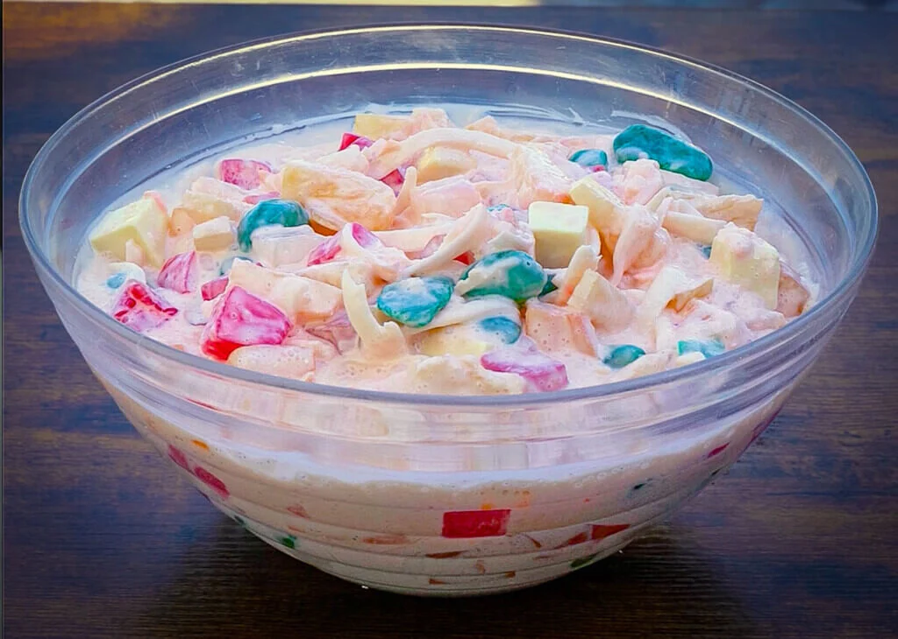

Buko Salad
Home

Description
Buko Salad is a refreshing Filipino dessert made with young coconut meat, milk, and sweetened condensed milk. It's a simple yet delicious treat that's perfect for hot weather.
Ingredients
- 1 cup young coconut meat, shredded
- 1 cup milk
- 1 can sweetened condensed milk
- 1 tbsp cornstarch
- 1 tsp vanilla extract
Instructions
- In a saucepan, combine milk and sweetened condensed milk.
- Bring to a boil over medium heat, stirring constantly.
- In a small bowl, mix cornstarch with a little cold water until smooth.
- Gradually add the cornstarch mixture to the boiling milk, stirring continuously.
- Cook for 2-3 minutes or until the sauce has thickened.
- Remove from heat and stir in vanilla extract.
- Let cool to room temperature.
- Gently fold in the shredded coconut meat.
- Refrigerate for at least 2 hours before serving.
Enjoy your delicious Buko Salad!